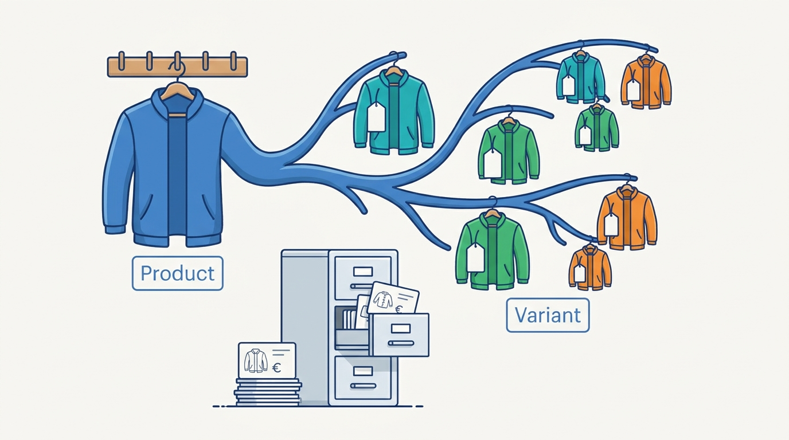

Part II — CATALOG: Products, Prices and Promises
What Are We Selling? Products, Variants and the Catalog
AI-assisted: researched and written with Claude Code and Codex; illustrations generated with Gemini and OpenAI image tools. How this works
